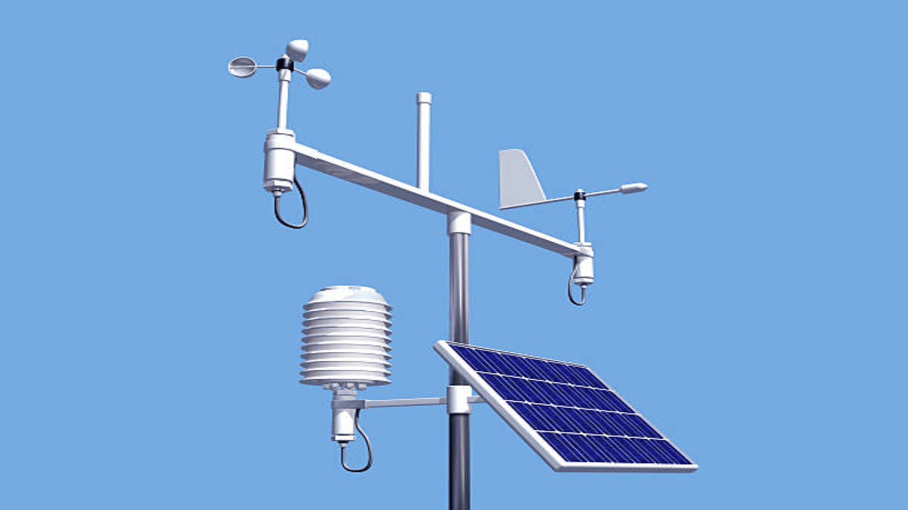

Expedična meteorologická mini stanica
Projekt Expedičná mini meteorologická stanica je zameraný na vývoj kompaktného,mobilného a cenovo dostupného zariadenia, ktoré bude určené na zber a monitorovanie základných meteorologických údajov v horskom prostredí. Stanica bude navrhnutá tak, aby spoľahlivo fungovala aj pri nízkych teplotách, čo je kľúčové pre pohyb v horách. Vďaka modulárnej konštrukcii umožní jednoduché rozšírenie o rôzne senzory (napr. teplota, vlhkosť, tlak vzduchu, rýchlosť a smer vetra). Cieľom projektu je poskytnúť prenosné riešenie pre horolezcov, turistov.
